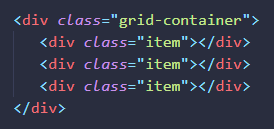
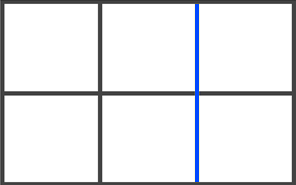
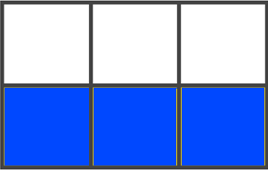
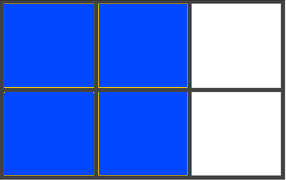
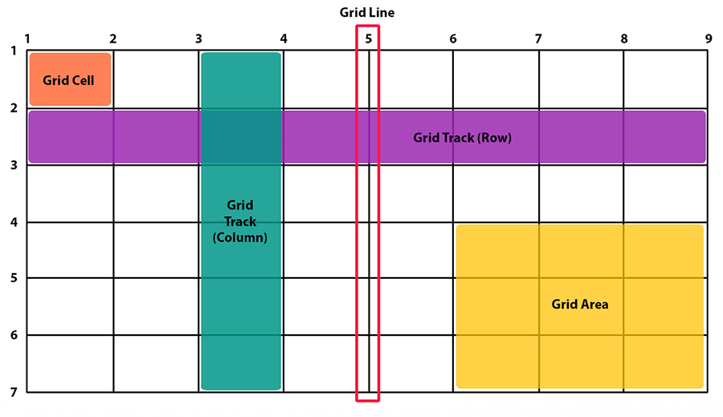
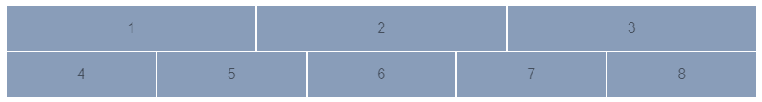
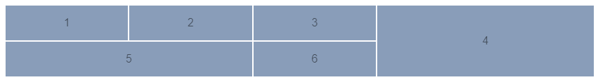
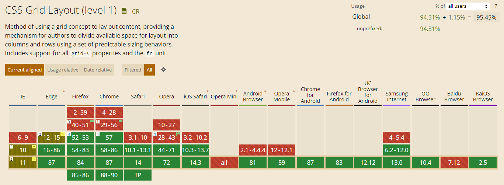

1. Введение
CSS Grid Layout - самая мощная система компоновки из доступных на данный момент в CSS. Это двумерная система, которая может обрабатывать как столбцы так и строки, в отличии от Flexbox, который в значительной степени является одномерной системой. При работе с CSS Grid, вы применяете CSS правила к родительским элементам (которые становятся Grid контейнерами) и к дочерним элементам (которые становятся Grid элементами).
- Контейнер сетки
- Элемент к которому применяется display: grid. Это прямой родитель для всех элементов сетки. В этом примере grid-container является контейнером.
- Элемент сетки
- Дочерние элементы (прямы потомки) контейнера. На примере выше item это элемент сетки.
- Линия сетки (Grid Line)
- Разделительные линии, составляющие структуру для сетки. Они могут быть вертикальными (линии колонок) или горизонтальными (линии строк) и располагаться по обе стороны от строки или столбца. На изображении синяя линия является примером вертикальной линии (линией колонки).
- Трек сетки (Grid Track)
- Пространство между двумя соседними линиями. Трек можно представить как строку (колонка) или столбец (ряд). Вот трек между второй и третей линией строк.
- Ячейка сетки (Grid Cell)
- Пространство между линиями двух соседних строк и двух соседних столбцов. Это отдельная единица измерения
сетки. Вот пример ячейки между линиями строк 1 и 2, линиями колонок 2 и 3.

- Область сетки (Grid Area)
- Общее пространство окружённое четырьмя линиями. Область может состоять из любого количества ячеек. Вот пример области между строками 1 и 3 и колонками 1 и 3.
- Как устроен grid контейнер
- 
2. Сравнение с Flexbox
В отличие от Flex, которая ориентирована на одну ось, Grid оптимизирована для двумерных компоновок: когда требуется расположить (выровнять) содержимое в обоих измерениях (по вертикали и горизонтали).
Кроме того, благодаря возможности явного позиционирования элементов в сетке, Grid позволяет выполнять кардинальные преобразования в структуре, не требуя никаких изменений HTML разметки. Комбинируя медиа-запросы со свойствами CSS, управляющими компоновкой контейнера grid и его дочерних элементов, можно адаптировать верстку под любые форм-факторы устройств.
Grid и Flexbox, имеют свои особенности и нельзя сказать, что одно заменяет другое. Скорее Флекс является дополнением к Грид, или наоборот.
Flexbox фокусируется на распределении пространства внутри одной оси, использует более простой подход к компоновке, может использовать систему упаковки строк на основе размера содержимого для управления своей вторичной осью и полагается на иерархию разметки. Тогда как Grid больше подходит для создания каркасов, потому что имеет более мощный и комплексный подход и в целом не зависит от иерархии разметки. В отдельных случаях Grid позволяет создать адаптивный макет, который невозможно создать с помощью Flex или как-то еще.
- Flexbox - ориентируется по одной оси
- 
- CSS Grid - ориентируется по двум осям
- 
3. Поддержка браузерами
В данный момент почти все современные браузеры поддерживают Grid CSS без необходимости указывать дополнительные префиксы и покрывают 97.94% всех устройств.
Посмотреть на сайте Can I use 4. Свойства для контейнера
- display
- Опеределяет элемент как контейнер и устанавливает новый контекст форматирования сетки для его
содержимого.
Значения:- grid - формирует сетку как блок
- inline-grid - формирует сетку как строчный элемент
- subgrid - если элемент сам является контейнером
- grid-template-columns
grid-template-rows - Опеределяет колонки и строки сетки с помощью списка значений разделённого пробелами. Значения
представляют из себя размер трека, а пробелы между ними линии сетки.
Значения:- px, em, rem, % - может быть фиксированным размером, процентами или частью свободного пространства в сетка (определяется с помощью единицы fr - фракция
- min-content - наименьший размер контента. Для текста это ширина самого длинного слова или неразрывного фрагмента.
- max-content - наибольший размер контента. Для текста это длина самой большой строки безе переносов.
- fit-content(max) - функция которой передается макс. размер. Если контент меньше этого размера, ведет себя как auto, если больше, то ограничивает размер ряда/колонки до указанного в параметре max.
- minmax(min,max) - функция, позволяет разом указать минимальный и максимальный размер.
Значения:- px,em,rem,... - единицы длины
- % - проценты
- fr - фракция (гибкий размер). Может использоваться только для макс. значения.
- min-content
- max-content
- auto - зависит от того, используется оно как максимальное или минимальное значение функции minmax(): если в качестве максимума, то тоже самое что max-content, если в качестве минимума, то значение будет минимальным возможным размером для ячейки. Такой размер отличается от min-content и задается свойствами min-width или min-height.
- repeat(n, value) - функция, позволяет повторять n раз то что передано в value. Используется при
создании колонок/рядов.
Значения n:- auto-fill - повторяет ряд/колонку пока есть место в контейнере. Хотя бы одно повторение будет всегда.
- auto-fit - то же самое, но после размещения элементов оставшиеся пустыми ряд/колонка сжимаются и исчезают, в результате контейнер всегда будет выглядеть заполненным.
- grid-template-columns: repeat(auto-fill, minmax(150px, 1fr));
- grid-template-columns: repeat(auto-fit, minmax(100px, 1fr));
- grid-template-columns: repeat(2, 100px 1fr);
- grid-template-areas
- Опеределяет шаблон сетки ссылаяся на имена областей, которые заданы с помощью свойства grid-area. Повторение названия области приводит к тому, что содержиоме
охватывает эти
ячейки. Точка означает пустую ячейку. Сам синтаксис предоставляет визуализацию структуры сетки.
Значения:- grid-area-name - имя области заданное с помощью grid-area
- . - точка обозначающая пустую ячейку
- none - области не определены
.container { display: grid; grid-template-columns: 1fr 200px 1fr; grid-template-rows: repeat(4, 150px); grid-template-areas: "header header header" "content content ." "content content ." "footer footer footer"; }
- grid-template
- Сокращение для grid-template-rows, grid-template-columns
и
grid-template-area.
Значения:- none - устанавливает все три свойства в их начальное значение
- subgrid - устанавливает grid-template-columns и grid-template-rows в subgrid и grid-template-area в его начальное значение
- grid-template-rows / grid-template-columns - устанавливает эти два свойства в определенное значение, а grid-template-area в none
- grid-template:
"header header header" 100px
"main main sidebar" 500px / 1fr 1fr 1fr;
/*
100px - высота первой строки
500px - высота второй строки
1fr 1fr 1fr - ширина столбцов
*/
- grid-column-gap
grid-row-gap
grid-gap - Опеределяет размер ширины линии между строками, между столбцами или для двух параметров одновременно.
Значения:- line-size - значение размера, например в px
- grid-column-gap: 10px;
- grid-row-gap: 20px;
- grid-gap: 15px;
- grid-gap: grid-row-gap grid-column-gap;
- grid-auto-columns
grid-auto-rows - Определяет размер строк или столбцов по умолчанию. Работает если не указаны свойства grid-template-rows и grid-template-columns соответственно,
а
так же для треков созданных автоматически.
Значения:- track-size - значение размера в %, px, em, rem или fr
- grid-auto-columns: 320px;
- grid-auto-rows: 1fr;
- grid-auto-flow
- Если у вас есть элементы, которые вы явно не позиционируете в сетке, запускается алгоритм авто
размещения, чтобы их автоматически разместить. Это свойство контролирует то как алгоритм
авто-размещения
работает.
Значения:- row - говорит алгоритму авто-размещения заполнять каждую строку поочерёдно, добавляя новые строки при необходимости
- column - говорит алгоритму авто-размещения заполнять каждую колонку поочерёдно, добавляя новые колнки при необходимости
- dense - говорит алгоритму авто-размещения заполнять дыры в сетке, если более мелкие элементы появляются позже
- grid
- Сокращение для настройки всех следующих свойств: grid-template-rows, grid-template-columns, grid-template-area, grid-auto-rows, grid-auto-columns, grid-auto-flow. Он так же настраивает grid-column-gap и grid-row-gap на их начальные значения, даже если они не могут быть явно заданы
этим
свойством.
Значения:- none - настраивает все совйства на их начальные значения
- grid-template-rows / grid-template-columns
- grid-auto-flow grid-auto-rows / grid-auto-columns
- grid-template-areas
- grid-template
- grid: 'header header header header' 'main main main right right' 'footer footer footer footer';
- grid: 100px 300px / 3fr 1fr;
- grid: auto-flow dense 100px / 1fr 2fr;
- grid: 100px 300px / auto-flow 200px;
- grid: [row1-start] "header header header" 1fr [row1-end] [row2-start] "footer footer footer" 25px [row2-end] / auto 50px auto;
- grid: repeat(auto-fill, 5em) / auto-flow 1fr;
- grid: auto-flow 1fr / repeat(auto-fill, 5em);
- grid: auto 1fr auto / repeat(5, 1fr);
- grid: repeat(3, auto) / repeat(4, auto);
- justify-items (1)
align-items (2)
place-items -
Выравнивает элементы внутри ячеек.
(1) Выравнивает элементы вдоль оси строки (по горизонтали).
(2) Выравнивает элементы вдоль оси столбца (по вертикали).
Значения:- start - размещает все элементы в начале ячеек (слева / сверху)
- end - размещает все элементы в конце ячеек (справа / снизу)
- center - размещает все элементы по центру ячеек
- stretch - растягивает все элементы на всю ширину / высоту ячеек
- align-items: center;
- justify-items: end;
- place-items: start;
- place-items: align-items justify-items;
- justify-content (1)
align-content (2)
place-content -
Выравнивает сетку внутри контейнера.
(1) Выравнивает элементы по горизонтали.
(2) Выравнивает элементы по вертикали.
Значения:- start - размещает все элементы в начале ячеек (слева / сверху)
- end - размещает все элементы в конце ячеек (справа / снизу)
- center - размещает все элементы по центру ячеек
- stretch - растягивает все элементы на всю ширину / высоту контейнера
- space-around - одинаковое пространство между элементами, и полуразмерные отступы по краям
- space-between - одинаковое пространство между элементами, без отступов по краям
- space-evenly - одинаковое пространство между элементами и полноразмерные отступы по краям
- align-content: center;
- justify-content: end;
- place-content: start;
- place-content: align-content justify-content;
5. Свойства для дочерних элементов
- grid-area
-
Даёт название элементу чтобы можно было ссылаться на него с помощью шаблона созданного через свойство
grid-template-areas. В качестве альтернативы, это свойство может быть
использовано в качестве сокращения для grid-row-start + grid-column-start + grid-row-end + grid-column-end
Значения:- name - название, которое вы выберите
- grid-row-start / grid-column-start / grid-row-end / grid-column-end - может быть нумерацией или названиями линий
- grid-area: header;
- grid-area: sidebar;
- grid-area: 1 / 2 / span 2 / -1;
- grid-column-start
grid-column-end
grid-row-start
grid-row-end -
Определяют местоположение в сетке ссылаясь на конкретные линии. grid-column-start / grid-row-start -
это линия с которой начинается элемент, а grid-column-end / grid-row-end - это линия на которой
элемент заканчивается.
Значения:- grid-line - может быть числом ссылающимся на пронумерованную линию, или названием ссылающимся на именованную линию
- span N - элемент, который будет охватывать предоставленное в N количество треков
- span grid-line - элемент будет охватывать пространство пока не достигнет линии с название указанным вместо grid-line
- auto - указывает автоматическое размещение, автоматический охват или охват по умолчанию
- grid-column-start: 2;
- grid-column-end: span 3;
- grid-row-start: myLine1;
- grid-row-end: -1;
- grid-column
grid-row -
Сокращения для grid-column-start + grid-column-end и grid-row-start + grid-row-end соответственно.
Значения:- grid-column: start-line / end-line;
- grid-row: start-line / end-line;
- grid-column: start-line / span value;
- grid-row: start-line / span value;
- grid-column: 2 / span 3;
- grid-row: myLine1 / -1;
- justify-self
align-self
place-self -
justify-self - Выравнивает содержимое элемента вдоль оси строки. align-self - Выравнивает содержимое
элемента вдоль оси столбца. place-self - Выравнивает текущий элемент внутри ячейки по двум осям сразу.
Эти значение применяются к содержимому внутри отдельного элемента.
Значения:- start - выравнивает содержимое по верхней / левой части области
- end - выравнивает содержимое по нижней / правой части области
- center - выравнивает содержимое по центру области
- stretch (default) - заполняет всю высоту / ширину области
- align-self: center;
- justify-self: start;
- place-self: end;
- place-self: align-self justify-self;